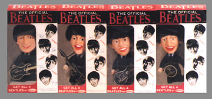

{kind=link}
{kind=link}
{kind=link}
{kind=link}
![[ return link ]](myback.gif)
The Beatles Remco Dolls | |
 | |
| Click on Ringo to see a close-up |
The Remco Dolls were in stores in 1964. They are a 5" tall rubber OR plastic body doll with rubber heads and lifelike hair. The rubber dolls feature the fine print on their feet while the plastic ones feature this print on their backs! Each doll was issued with their respective black plastic with gold trim instrument and it's on these that you find their signatures. (Handy info. as it's often hard to tell them apart! (except for Ringo of course, the nose thing you know!)
As for store packaging, mostly they were issued each in a custom "Beatles"
box with a window to see which Beatle was inside. The boxes are typical for all
four. (Meaning they are interchangeable).
A very rare custom marked 5" square custom "Beatle Doll Set" cardboard box was used for catalogue sales of the dolls. Although not as colorful or "Beatlely!", this box is extremely rare and much more valuable. Inside the box is a cardboard "doll separator". Here's a photo of another box.
Generally the dolls are fairly durable and not too difficult to find in nice shape. As anything, perfect or Near Mint sets are hard to get. Usually it's the instruments that took all the wear, so most collectors look for the degree of gold trim left on the black plastic instruments. Often, they're missing altogether.
Interesting to note, there have been a few prototype dolls to surface over the years and they featured "Yellow Instruments with black print" and minor different markings on the body. These are very rare and would easily be worth 5-10 times the standard doll value in nice shape. The "Remco Dolls" as they are commonly referred, continue to be one of the hottest Beatles collectibles around and when you see a nice set, you see why!
Thanks to Perry Cox for the content and M. McGeary for some of the graphics.